Este survey organiza el campo de los modelos grandes de lenguaje para generacion de codigo, o Code LLMs. Su foco principal es NL2Code: producir codigo fuente a partir de descripciones en lenguaje natural. El articulo funciona como mapa del area: historia de modelos, arquitecturas Transformer, curacion de datos, pre-entrenamiento, instruction tuning, fine-tuning eficiente, prompting, RAG para codigo, agentes autonomos, evaluacion, seguridad, licencias, impacto ambiental y aplicaciones reales como Copilot.
Pregunta Del Survey
El paper parte de una brecha: hay muchos trabajos sobre LLMs y tareas de software, pero faltaba una revision actualizada y especifica sobre generacion de codigo. La generacion de codigo ya no es solo completar tokens: incluye modelos especializados, datos sinteticos, alineamiento con instrucciones, ejecucion como feedback, recuperacion desde repositorios, agentes con herramientas y evaluadores automaticos.
El objetivo es ordenar ese ecosistema y mostrar donde la investigacion academica todavia no coincide con la practica real de desarrollo. HumanEval esta casi saturado, pero tareas de repositorio, mantenimiento, integracion, seguridad y benchmarks mas realistas siguen siendo dificiles.
Ideas Clave
1. El codigo exige datos distintos
Los Code LLMs se entrenan con repositorios, documentacion, problemas con tests, datos sinteticos e instrucciones. La calidad de filtrado, deduplicacion y licencias importa tanto como el tamano.
2. La especializacion supera al modelo base
Pre-entrenamiento continuo, instruction tuning y PEFT permiten convertir modelos generales en asistentes de codigo mucho mas utiles para tareas concretas.
3. Ejecutar cambia el juego
Los pipelines modernos usan tests, errores de compilacion y reflexion iterativa para reparar respuestas. La generacion se vuelve un ciclo, no una unica salida.
4. Evaluar sigue siendo dificil
Pass@1 en HumanEval es util, pero no mide bien trabajo real: dependencias, contexto de repositorio, seguridad, estilo, eficiencia, mantenibilidad y preferencias humanas.
Mapa Del Campo
| Bloque | Que cubre | Por que importa |
|---|---|---|
| Datos | Repositorios, filtrado, deduplicacion, licencias, datos de instrucciones y datos sinteticos. | El modelo aprende estilo, APIs, bugs, sesgos y restricciones legales desde los datos. |
| Entrenamiento | Pre-training, continual pre-training, instruction tuning, RLHF/DPO y PEFT. | Define si el modelo solo predice codigo o si puede seguir instrucciones utiles de desarrollo. |
| Inferencia | Prompting, multi-turn, self-refinement, RAG/RACG y uso de herramientas. | Permite incorporar contexto externo, ejecutar, depurar y ajustar soluciones. |
| Agentes | Planificacion, memoria, herramientas, accion, multi-agente y roles de software. | Acerca los LLMs a flujos reales como implementar features, escribir tests o arreglar issues. |
| Evaluacion | HumanEval, MBPP, BigCodeBench, pruebas de ejecucion, LLM-as-a-Judge y evaluacion humana. | Evita confundir resolver puzzles pequenos con hacer software robusto en escenarios reales. |
Figuras Explicadas
Las citas bajo cada figura corresponden a los captions extraidos del PDF. Debajo agrego una lectura en espanol orientada a estudiar el argumento del survey.

A chronological overview of LLMs for code generation in recent years.
La figura muestra la aceleracion del campo: de modelos iniciales y generalistas a modelos especificamente entrenados para codigo. Los modelos con checkpoints publicos estan resaltados, lo que ayuda a distinguir investigacion reproducible de sistemas cerrados. La lectura principal es historica: Code LLMs pasaron de ser adaptaciones de LLMs generales a una familia propia con datos, benchmarks y objetivos especializados.

The overview of LLMs with encoder-decoder and decoder-only Transformer architecture for code generation.
Compara arquitecturas Transformer relevantes. Los encoder-only suelen servir mejor para comprension, busqueda o clasificacion; los decoder-only dominan tareas generativas como completar o producir codigo; los encoder-decoder pueden cubrir ambos lados. La figura ubica la generacion de codigo dentro de decisiones de arquitectura, no solo de prompt.

Overview of the paper search and collection process.
Describe como los autores construyen el corpus del survey: busqueda, filtrado automatico, criterios de inclusion/exclusion y revision. Es importante porque el articulo no es solo opinion narrativa; intenta ser una revision sistematica. Esta figura permite evaluar el alcance y posibles sesgos de seleccion.
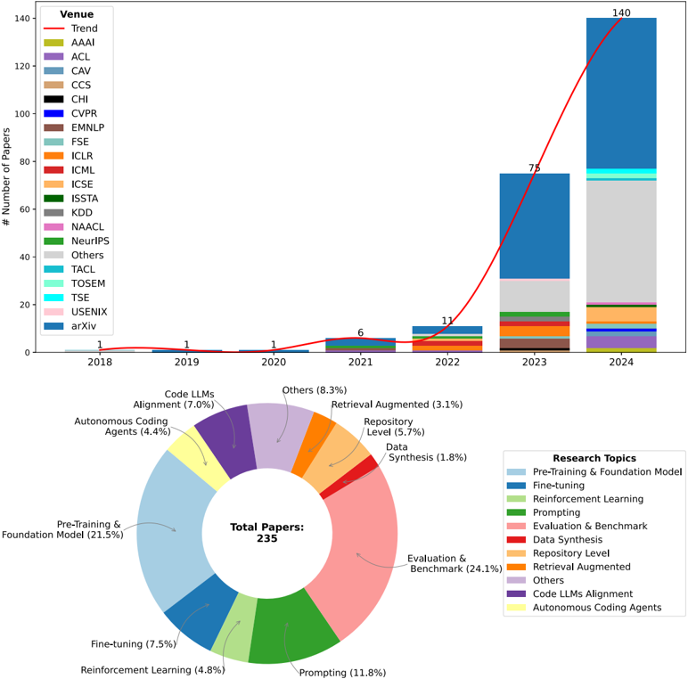
Data qualitative analysis: annual distribution of selected papers and topic distribution.
Resume la evolucion bibliografica: crecen los trabajos y se distribuyen en temas como datos, entrenamiento, prompting, evaluacion y aplicaciones. Sirve para ver donde esta cargada la investigacion. Si una categoria aparece muy grande, indica madurez o moda; si aparece pequena, puede indicar oportunidad abierta.
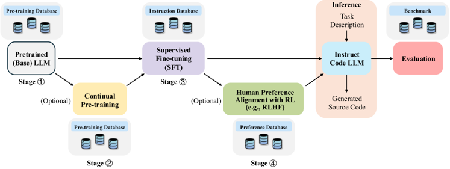
General training, inference, and evaluation workflow for Code LLMs and their associated databases.
Es el mapa operativo del ciclo completo: pre-entrenar, continuar pre-entrenamiento si hace falta, ajustar con instrucciones, alinear, inferir y evaluar. La figura muestra que no todos los modelos pasan por todos los pasos. Por ejemplo, un modelo puede solo pre-entrenarse y usarse con prompts, o recibir etapas extra de instruction tuning y alineamiento para mejorar usabilidad.

Taxonomy of LLMs for code generation.
Esta es la figura central del survey. Organiza el campo en datos, modelos, tecnicas de entrenamiento, inferencia, agentes, evaluacion, impacto etico/ambiental y aplicaciones. Funciona como indice mental del paper: cada bloque responde una pregunta distinta, desde "con que datos entreno?" hasta "como se si el codigo generado es seguro y util?".
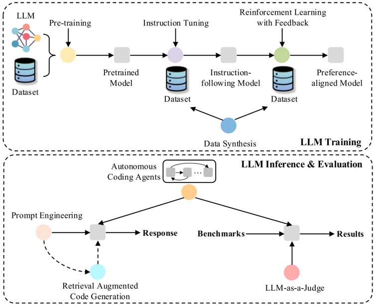
Comprehensive overview of techniques and their interconnections within LLM development.
Conecta tecnicas concretas con modelos resultantes. Arriba aparecen procesos de entrenamiento, como pre-training, instruction tuning, RLHF y datos sinteticos; abajo, tecnicas de inferencia y evaluacion como prompt engineering, RAG y LLM-as-a-Judge. La figura muestra que el progreso no viene de una sola mejora, sino de combinaciones acumulativas.
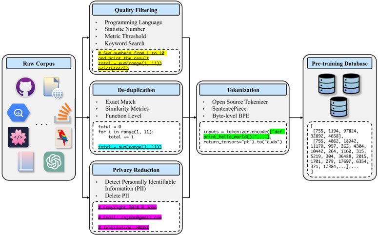
Standard data preprocessing workflow utilized in the pre-training phase.
Explica la parte menos glamorosa pero mas critica: recolectar codigo, limpiar, filtrar duplicados, remover datos problematicos, tokenizar y preparar corpus. En Code LLMs esto importa especialmente porque los repositorios tienen licencias, secretos, codigo generado, tests, binarios, forks y duplicados. Un mal pipeline contamina benchmarks y reproduce bugs.
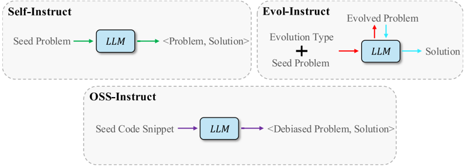
Comparison among self-instruct, Evol-Instruct and OSS-Instruct methods.
Compara formas de generar datos de instrucciones. Self-instruct crea ejemplos desde el propio modelo; Evol-Instruct transforma instrucciones en versiones mas complejas; OSS-Instruct aprovecha ecosistemas open source para tareas mas cercanas al codigo real. La figura responde por que la calidad de instruction tuning depende de la diversidad y dificultad de las instrucciones, no solo de cantidad.
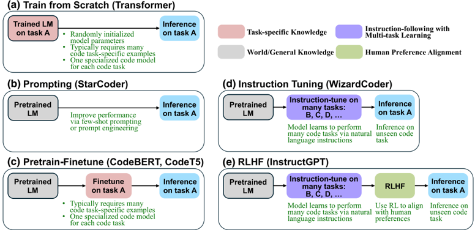
Comparison of instruction tuning with various fine-tuning strategies and prompting for code tasks.
Ubica instruction tuning frente a entrenamiento desde cero, fine-tuning supervisado, prompting y alineamiento con feedback. La idea importante: prompting no cambia pesos; fine-tuning si. Instruction tuning enseña al modelo a obedecer tareas expresadas en lenguaje natural, lo que es esencial para pasar de "modelo que completa codigo" a "asistente que entiende una peticion".
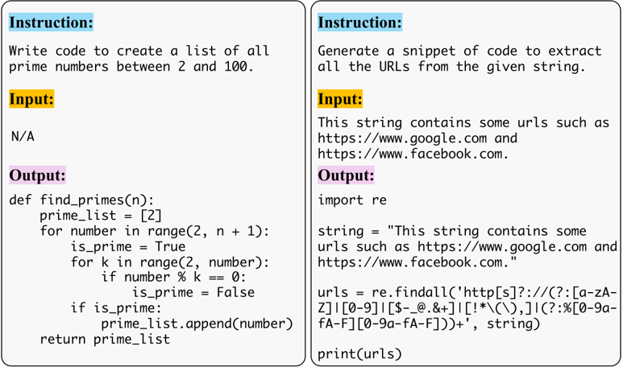
Two examples of instruction data sampled from Code Alpaca.
Hace concreto el concepto de instruction data: una instruccion textual, posible entrada y salida esperada. Los ejemplos muestran tareas como generar numeros primos o extraer URLs. Esta figura ayuda a entender que el modelo aprende un formato conversacional de tarea-respuesta, no solo distribuciones de repositorios.
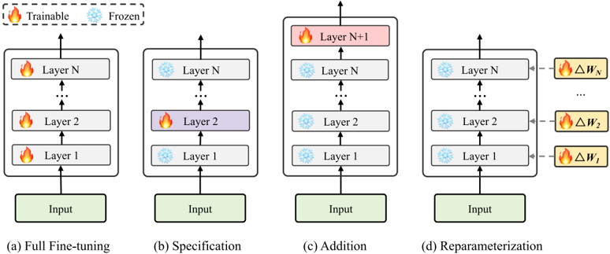
Illustration of FFT and PEFT methods.
Compara full fine-tuning, que actualiza todos los parametros, con PEFT, que ajusta solo partes pequenas o parametros agregados. Incluye BitFit, adapters, prefix/prompt tuning, LoRA y QLoRA. La lectura practica: PEFT permite adaptar modelos grandes a tareas de codigo con menos memoria y costo, aunque con trade-offs de capacidad y estabilidad.
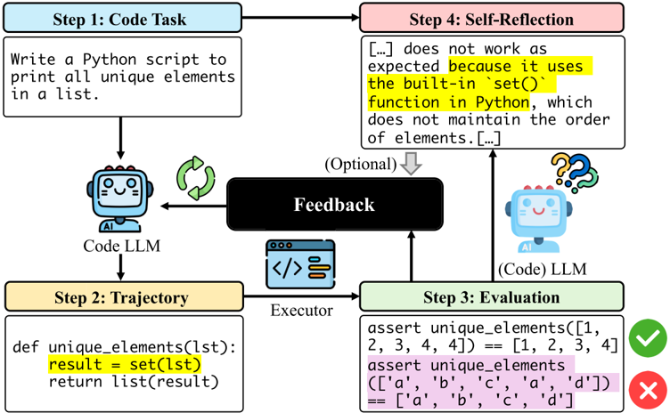
Self-improving code generation pipeline using prompts for LLMs.
Muestra generacion iterativa: el modelo produce codigo, se ejecuta, recibe errores o resultados, y refina la respuesta. Puede incluir self-reflection. Esta figura captura una diferencia central entre texto y codigo: el codigo se puede probar. La ejecucion convierte la generacion en un ciclo de hipotesis, prueba y reparacion.
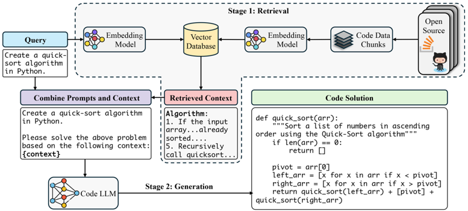
Workflow illustration of Retrieval-Augmented Code Generation.
RACG agrega recuperacion de contexto antes de generar. Una consulta busca fragmentos, documentacion o ejemplos en una base vectorial; luego el LLM genera usando ese contexto. Para codigo real esto es enorme: muchas respuestas dependen de APIs locales, convenciones del repositorio y dependencias que no estan en el prompt inicial.
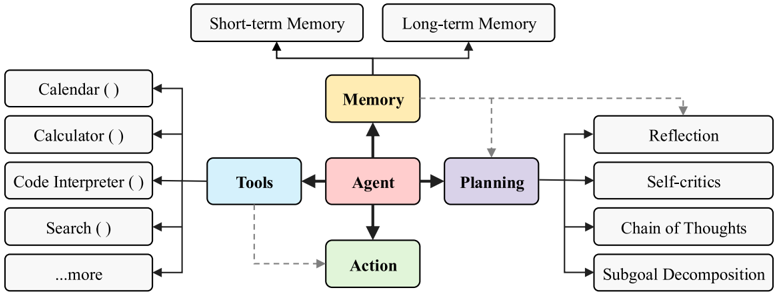
General architecture of an LLM-powered autonomous agent system.
Presenta el patron agente: planificacion, memoria, herramientas y accion. En generacion de codigo, esto permite dividir tareas, consultar archivos, ejecutar tests, recordar intentos y usar APIs. La figura explica por que un agente puede resolver problemas que un unico prompt no maneja bien: interactua con el entorno.
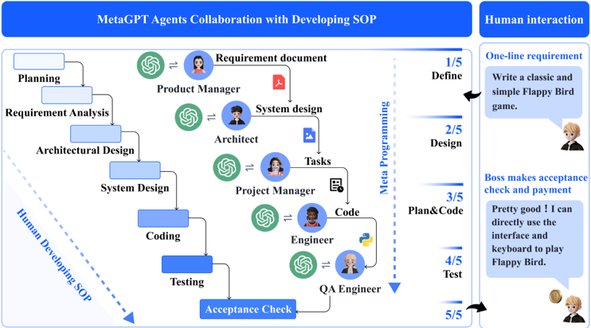
MetaGPT integrates human workflow efficiencies into LLM-based multi-agent collaboration.
Usa roles de desarrollo como Product Manager, Architect y Engineer para dividir trabajo. La idea es imitar procesos humanos de software: especificar, disenar, implementar y revisar. La figura tambien advierte una tension: mas agentes no garantizan mejor resultado; el diseno de roles, contexto y comunicacion es parte del sistema.
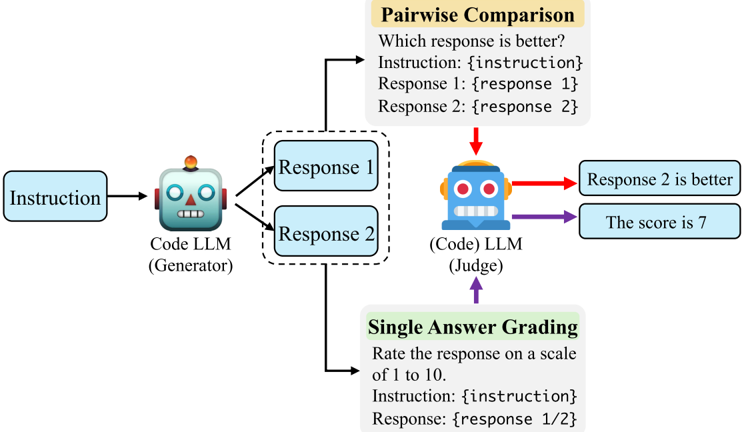
Pipeline of Code LLM-as-a-Judge for evaluating generated code.
Describe evaluacion con otro LLM, sea por comparacion par-a-par o calificacion de una respuesta. Es escalable y puede explicar su juicio, pero hereda sesgos y limitaciones del juez. En codigo, conviene combinarlo con ejecucion, tests y criterios humanos, porque una respuesta puede parecer elegante y aun asi fallar casos borde o introducir vulnerabilidades.
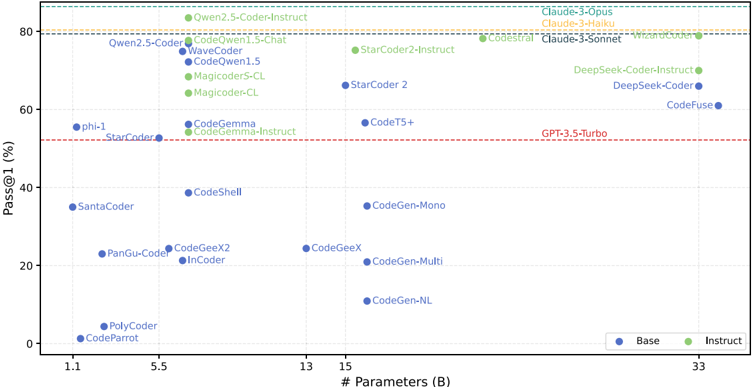
Performance comparison of LLMs for code generation on the MBPP benchmark, measured by pass@1.
MBPP mide problemas de programacion relativamente basicos. La figura compara modelos por pass@1 y muestra la mejora de modelos especializados y recientes. La lectura importante no es solo quien gana, sino que benchmarks faciles tienden a saturarse: sirven para medir progreso inicial, pero no bastan para evaluar software real.
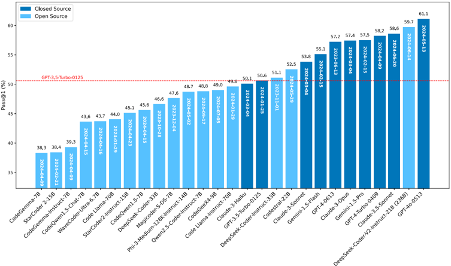
Performance comparison of LLMs for code generation on the BigCodeBench benchmark, measured by pass@1.
BigCodeBench intenta acercarse mas a tareas practicas y complejas. Por eso suele separar mejor a los modelos que MBPP o HumanEval. La figura sostiene uno de los argumentos finales del survey: el campo necesita benchmarks mas realistas, con instrucciones complejas, bibliotecas, contexto y criterios de calidad mas amplios que "pasa los tests".
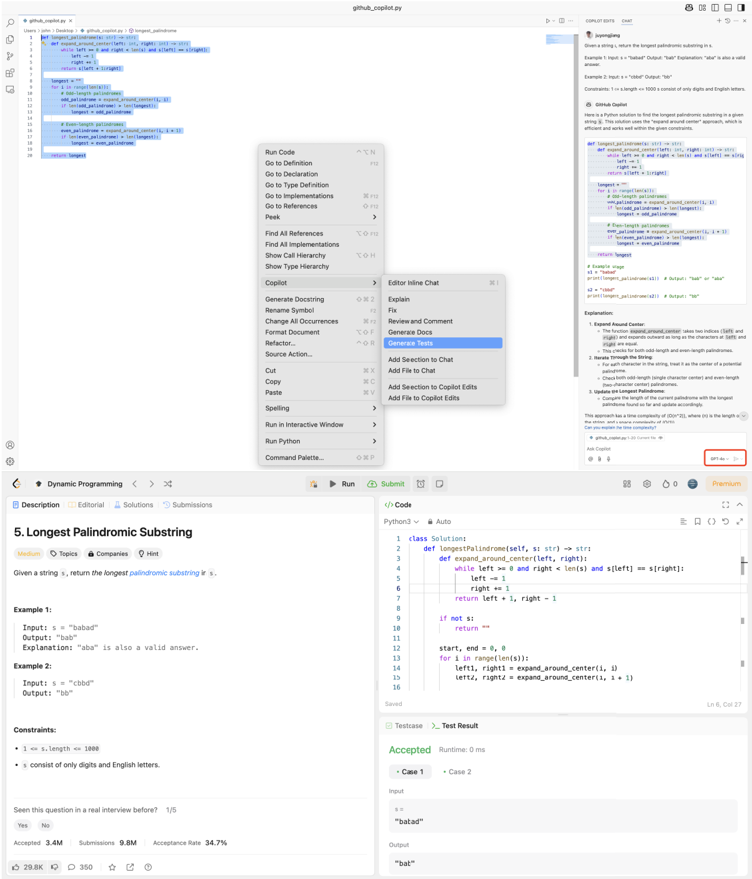
An exemplar of GitHub Copilot to demonstrate how to use development tools powered by LLMs.
La figura aterriza el survey en una herramienta real. Muestra un flujo tipo Copilot Chat: se ingresa un problema, el modelo genera codigo y se valida en un juez online. Es representativa de aplicaciones actuales, pero tambien limitada: resolver un ejercicio LeetCode no equivale a mantener un repositorio, entender requisitos cambiantes o garantizar seguridad en produccion.
Modelo Mental
De modelo a asistente: un Code LLM util no nace solo de escalar parametros. Necesita datos de codigo limpios, instruction tuning, evaluacion por ejecucion y adaptacion al flujo de desarrollo.
De prompt a sistema: las tecnicas modernas combinan prompts, RAG, herramientas, tests, memoria y agentes. El modelo ya no es la aplicacion completa, sino el nucleo de un sistema.
De benchmark a practica: HumanEval y MBPP ayudan, pero el futuro esta en evaluaciones con contexto de repositorio, dependencias, seguridad, mantenibilidad y tareas largas.
De capacidad a responsabilidad: generar codigo implica licencias, vulnerabilidades, sesgos, energia, privacidad y accountability. La calidad tecnica no basta.
Limitaciones Y Oportunidades
El survey identifica una brecha persistente entre investigacion y desarrollo real. Muchos resultados se reportan en benchmarks pequenos o saturados, mientras que el trabajo cotidiano involucra repositorios grandes, dependencias, requisitos ambiguos, integracion continua, revision humana, seguridad y mantenimiento. Las oportunidades principales son evaluacion mas holistica, generacion a escala de software, mejores datos abiertos y legales, alineamiento con preferencias humanas, herramientas de depuracion, agentes mas confiables y reduccion del costo ambiental.
Resumen Final
Jiang et al. presentan un mapa amplio y actualizado del ecosistema Code LLM. El mensaje central es que la generacion de codigo moderna ya no se explica solo por el modelo: depende de datos, entrenamiento, instrucciones, recuperacion, ejecucion, agentes y evaluacion. El campo avanzo mucho en benchmarks clasicos, pero la frontera real esta en construir sistemas que puedan trabajar con repositorios, herramientas y criterios humanos de calidad. Para estudiar o construir asistentes de codigo, este survey sirve como checklist completo del stack tecnico y de sus riesgos.
Archivo HTML generado desde el PDF local y las figuras ya extraidas en pappers/ilove-Jiang.2026_figures.